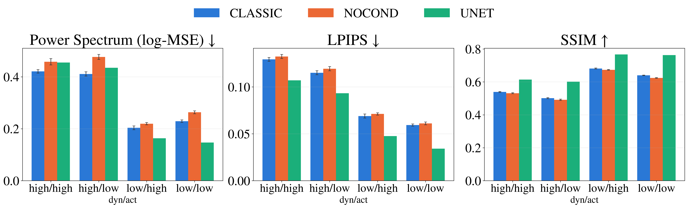

Space weather disturbances driven by the solar wind can degrade satellite navigation, disrupt radio communications, and threaten power infrastructure, making accurate forecasting of the high-latitude ionosphere's response a critical operational need. Existing approaches, empirical climatological models and physics-based magnetohydrodynamic simulations, either smooth out the ionosphere's time-dependent, non-linear response or are too computationally expensive for real-time use, while prior machine learning efforts have mostly targeted scalar indices rather than the full spatial structure of ionospheric convection. Here we train and compare three deep learning architectures, a probabilistic diffusion model conditioned on multi-variate solar wind and interplanetary magnetic field measurements at the L1 Lagrangian point, an unconditioned diffusion ablation, and a deterministic U-Net baseline, to forecast Southern Hemisphere high-latitude electric potential maps derived from SuperDARN radar observations. Using five years (2020–2025) of SuperDARN data synchronised with DSCOVR L1 measurements, we evaluate the models under a single-pass regime, an extended autoregressive rollout of up to 350 frames, and an out-of-distribution case study on the intense March 2015 St. Patrick's Day storm, unseen during training. We find that the relative advantage of the deterministic and probabilistic approaches is not fixed: the deterministic model is competitive over short horizons and calm conditions, while the diffusion model's advantage grows and eventually dominates as the forecast horizon lengthens and the event becomes more dynamic, evidence that probabilistic, sample-based generative models are the more promising direction for operational, long-horizon space weather forecasting.
Results

Under the training-matched single-pass regime, the deterministic U-Net is competitive with, and at times preferable to, the diffusion models.

As the rollout lengthens, U-Net's regression-to-the-mean bias compounds while the diffusion models keep regenerating plausible high-frequency detail — the crossover in relative advantage central to this paper's findings.